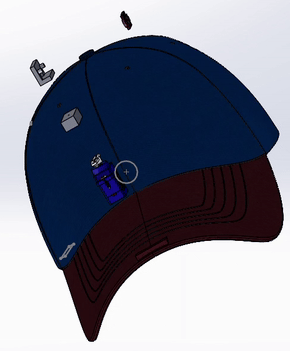

BatHat
wearable navigation aid for the visually impaired : jan- apr 2025

Overview
Built for my cornerstone engineering class, where the theme was biomimicry. Inspired by how bats use echolocation to navigate in the dark, my team designed BatHat, a wearable that helps visually impaired users detect obstacles that a traditional cane can miss. The hat uses LiDAR to sense its surroundings and haptic vibrations to alert the user in real time. We also developed a supplemental program on a Raspberry Pi with a Pi Cam to execute API calls for user location.
How it works
BatHat combines real-time obstacle sensing with directional haptic
feedback in a head-worn, 3D-printed package. A LiDAR sensor
continuously measures the distance to nearby objects, and an Arduino
nano microcontroller processes those readings live. The device has
five vibration motors positioned around the housing, so when an
obstacle comes within 500 mm, the motors facing its direction buzz
gives the user a rough sense of where the hazard is. The housing was
modeled in SolidWorks and 3D printed to sit comfortably on the head
for everyday wear.
Beyond obstacle detection, we added a Raspberry Pi with a Pi Cam for
location awareness. When the user presses a button, the camera
captures an image and sends it to a vision AI model (Gemini) with
the prompt "where am I?" — then a connected speaker reads the answer
aloud, describing the user's surroundings.
